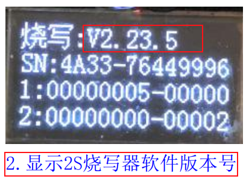
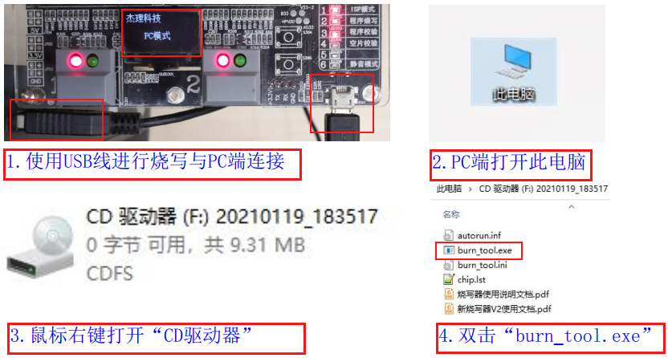
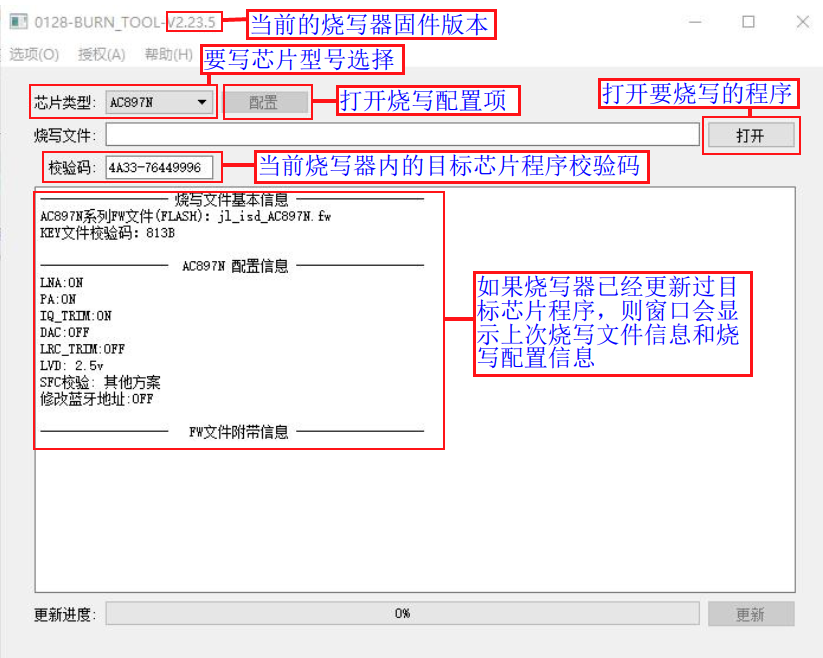
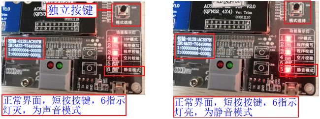
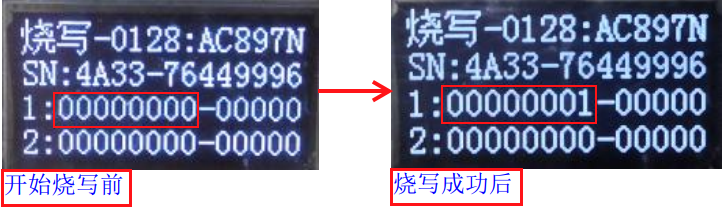
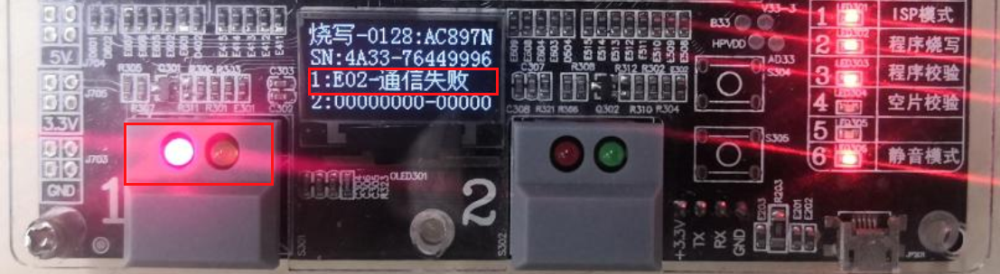
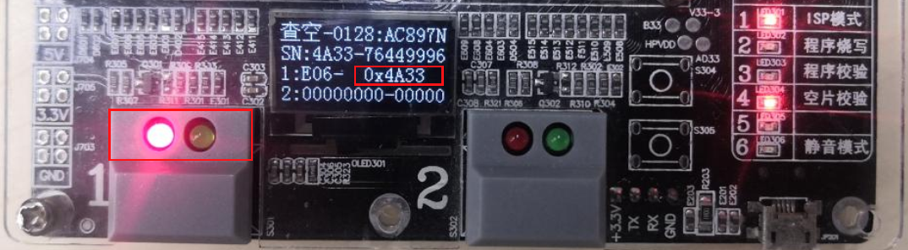

1.2. 手动烧录、校验、查空芯片操作流程
1.2.1. 烧录环境准备
烧录需要准备的物料清单：
类别 |
说明 |
数量 |
|---|---|---|
PC计算机 |
1. 用于升级烧录器固件，升级到需要的固件版本或最新版本 |
1 台 |
烧录器主机 |
用于控制烧录芯片 |
1台 |
USB数据线 |
用于烧录器和PC计算机连接，升级烧录器固件或更新目标芯片程序 |
1条 |
电源适配器 |
请使用9.0V、2.0A以上规格电源，给烧录器供电 |
1个 |
上层板 |
1.烧录裸片：准备对应待烧录芯片型号的的socket板 |
1或2个 |
待烧录的芯片 |
待烧录的芯片放置对应芯片型号的的socket板进行烧录 |
若干 |
待烧录的芯片程序 |
准备要烧录sdk编译生成的fw文件（包含了key文件）； |
1个 |
1.2.2. 烧录器上电开机

1.2.3. 烧录器固件版本确认及更新
烧录器固件指控制整个烧录器工作的主控芯片固件程序，烧录目标芯片程序前务必确认当前烧录器固件版本是否是最新（特殊情况除外），否则可能出现一些烧录问题。
当前烧录器版本确认
烧录器上电开机显示完“杰理LOGO”后，会显示2S时间当前烧录器固件版本号（更新目标芯片程序界面也包含有烧录器固件版本号），如烧录器固件版本号显示所示。

烧录器固件版本号显示
定期检查是否有新版本及更新烧录器固件
如果当前烧录器使用的固件版本过旧，更新目标芯片程序 fw 文件的 PC 工具界面会有相应的更新提示，如有新固件请及时进行更新。
进入远程升级烧录器固件的PC端控制界面，即可获取到最新的3个烧录器固件版本号，可选择需要的版本进行升级。升级步骤可参考远程升级烧录器固件。
1.2.4. 部署目标芯片程序到烧录器
1.2.4.1. 部署说明
芯片烧录、校验、查空程序前，需要部署目标芯片对应的烧录程序即SDK编译生成的fw文件、ufw文件，或key文件到烧录器，烧录过程烧录器会把程序烧录到目标芯片，或利用程序进行校验和查空。 如果烧录器已经部署过对应的程序，请跳过以下小节的操作步骤。
1.2.4.2. 打开部署程序界面
在烧录器上电开机后，按如打开部署程序界面所示进行操作，
【1】使用USB数据线进行
烧录器更新程序用的USB接口和PC端的USB接口连接，显示屏显示PC模式；【2】打开PC端
此电脑，看到CD驱动器光驱；【3】鼠标右键打开“CD驱动器”光驱，会看到
burn_tool.exe文件；【4】双击
burn_tool.exe，出现如部署程序界面所示部署程序的界面；

打开部署程序界面

部署程序界面
1.2.4.3. 选择要烧录的目标芯片型号
这里对AC897N芯片进行fw烧录文件部署演示，所以在打开部署程序界面后，选择要烧录的目标芯片型号时，在如芯片型号选择界面所示“芯片类型”下拉菜单，选择芯片类型为AC897N。

芯片型号选择界面
1.2.4.4. 选择并部署烧录文件到烧录器
待烧录的芯片型号选择好后，按如部署fw烧录文件到烧录器所示步骤操作：
【1】点击打开并选择fw文件（ufw文件、key文件也可以，也可烧录经过授权后带烧录次数限制的fw/ufw文件，可参考授权烧录次数限制功能）；
【2】点击配置，选择芯片烧录配置项后点击OK，如烧录配置项配置界面所示（一般默认，可参考各型号芯片PC端烧录配置项介绍根据需求进行配置）；
【3】点击更新按钮，部署FW文件即目标芯片烧录程序到烧录器；
【4】部署烧录文件成功后，有“更新烧录器成功，请重新上电”提示，点击确认后请对烧录器重新上电（拔出烧录器端的USB数据线，并对”电源总开关“进行按下关闭再按下打开操作）。
如果部署失败，有对应的错误信息提示，根据提示找错误原因再重新部署，如反复部署失败，有解决不了的问题，及时联系杰理技术支持。

部署fw烧录文件到烧录器

烧录配置项配置界面
1.2.5. 烧录器工作模式介绍与设置
1.2.5.1. 烧录器工作模式介绍
工作模式 |
模式介绍 |
|---|---|
烧录模式 |
把部署到烧录器的程序文件即SDK编译生成的.fw、.ufw文件，或.key文件 |
校验模式 |
把部署到烧录器的程序文件即SDK编译生成的.fw、.ufw文件，或.key文件及lvd, |
查空模式 |
检查芯片是否是空片，芯片是否处于出厂前状态，即是否已经烧录过.fw文件程序、key文件数据； |
声音模式 |
打开蜂鸣器声音提示功能 |
静音模式 |
关闭蜂鸣器声音提示功能 |
Note
对于
烧录模式，已经包含了校验功能，烧录到芯片的任何数据，执行烧录后都会读取校验是否烧录正确;
对于
查空模式，即使显示了.fw文件的校验码，但是不能证明芯片烧录程序是完整的，查空仅是从某个区域读取校验码进行显示；查空显示校验码主要用于找回上次烧录的.fw文件，方便管理烧录文件。如想知道当前手上的样机烧录的是众多fw文件中的哪个文件，可用找回的.fw文件进行生产烧录,测试,不良分析；
要二次确认芯片上次烧录的程序是否完整，同当前部署的.fw文件数据、烧录配置是否一致，必须使用
校验模式；
1.2.5.2. V3.1版本烧录器工作模式设置
此版本烧录器主要用拨码开关来设置工作模式，1~5拨码开关作为一个控制单元用来设置烧录、校验、查空模式 ;第6个拨码开关作为一个控制单元用来设置声音模式。 工作模式对应的拨码开关拨码如拨码开关设置工作模式所示。

拨码开关设置工作模式
1.2.5.3. V5.0版本烧录器工作模式设置
烧录、校验、查空模式设置
如独立按键设置工作模式所示的操作步骤：
【1】长按
独立按键（模式选择按键）（参考：烧录器主机介绍 中的图片），3s后松开，烧录器进入模式设置状态，显示屏显示模式设置和当前模式、1号指示灯不断闪烁；【2】短按
独立按键切换烧录器模式（烧录-校验-查空循环切换）；【3】
独立按键2s内未有按下操作后，即选择了当前设置的模式，显示屏回到正常界面（显示屏显示正常界面前有2S显示当前烧录器版本号)，正常界面显示有当前的工作模式。

独立按键设置工作模式
声音模式设置：
如独立按键设置声音模式所示，显示屏处于显示正常界面，短按独立按键切换声音模式（声音模式-静音模式循环切换）。

独立按键设置声音模式
1.2.6. 芯片程序烧录
1.2.6.1. 烧录准备工作
烧录芯片程序前，确保执行了前4小节的相关操作，以防烧录过程出现一些异常问题，包括：
烧录前上电开机，进入准备正常显示界面（请参考《烧录器上电开机》小节）
确认或更新当前烧录器固件版本为需要的版本（请参考《烧录器固件版本确认及更新》小节，可不定时确认）
确认或更新当前烧录器内的目标芯片程序为要烧录的程序（请参考《部署目标芯片程序到烧录器》小节）
确认或设置当前烧录器工作模式为烧录模式（请参考《烧录器工作模式介绍与设置》小节）
安装好上层板后(参考《上层板介绍与安装》进行安装)，放置芯片到对应芯片型号的上层板socket座子上，芯片放好后盖上socket座盖子。芯片放置如芯片放置所示。

芯片放置
Important
上层板socket座上白色的小箭头为芯片第1引脚，请别放错。
1.2.6.2. 芯片开始烧录
烧录准备工作做好后，即可对芯片执行烧录。如果芯片放置在通道1上层板上进行烧录，请短按通道1开始按键；如芯片放置在通道2上层板上进行烧录，请短按通道2开始按键； 如芯片开始烧录操作所示。

芯片开始烧录操作
1.2.6.3. 烧录结果判断
烧录成功判断
开始按键短按后
绿色指示灯由“灭-亮-灭变化，红色指示灯处于熄灭状态，蜂鸣器鸣叫一声，表示烧录成功，烧录成功后显示屏成功计数部分加1。例如通道1烧录成功显示屏显示变化如通道1烧录成功显示变化所示。

通道1烧录成功显示变化
烧录失败判断
开始按键短按后
绿色指示灯由灭-亮-灭变化后，红色指示灯亮起，并在显示屏上显示错误信息，表示烧录失败。例如通道1开始烧录后报通信失败（也可能是其它错误类型），如通道1烧录失败显示所示。
显示屏报错后，下次烧录成功，或者重启烧录器显示即可恢复正常。
通道1烧录失败显示
Note
芯片烧录成功后即可从上层板的socket座取出芯片进行贴片上样机，或者放入demo板，开发板的socket座进行产品功能测试；同一颗芯片可以改变目标芯片程序，烧录配置项等进行反复多次烧录；
烧录失败的芯片不允许流入后续的生产环节，需要进一步分析具体烧录失败原因；
3.了解详细的状态指示和报错提示说明，请参考《状态指示和报错提示说明》章节；
1.2.7. 芯片程序校验
1.2.7.1. 校验准备工作
校验芯片程序前，确保执行了前4小节的相关操作，以防校验过程出现一些异常问题，包括：
烧录前上电开机，进入准备正常显示界面（请参考《烧录器上电开机》小节）
确认或更新当前烧录器固件版本为需要的版本（请参考《烧录器固件版本确认及更新》小节，可不定时确认）
确认或更新当前烧录器内的目标芯片程序为要校验的程序（请参考《部署目标芯片程序到烧录器》小节）
确认或设置当前烧录器工作模式为校验模式（请参考《烧录器工作模式介绍与设置》小节）
安装好上层板后，放置芯片到对应芯片型号的上层板socket座子上，芯片放好后盖上socket座盖子。
1.2.7.2. 芯片开始校验
校验准备工作做好后，即可对芯片执行校验。如果芯片放置在通道1上层板上进行校验，请短按通道1开始按键；如芯片放置在通道2上层板上进行校验，请短按通道2开始按键；操作步骤同《芯片开始烧录》小节一致。
1.2.7.3. 校验结果判断

1.2.8. 芯片程序查空
1.2.8.1. 查空准备工作
查空芯片程序前，确保执行了前4小节的相关操作，以防查空过程出现一些异常问题，包括：
烧录前上电开机，进入准备正常显示界面（请参考《烧录器上电开机》小节）
确认或更新当前烧录器固件版本为需要的版本（请参考《烧录器固件版本确认及更新》小节，可不定时确认）
确认或更新当前烧录器内的目标芯片程序为对应芯片型号的程序（请参考《部署目标芯片程序到烧录器》小节）
确认或设置当前烧录器工作模式为查空模式（请参考《烧录器工作模式介绍与设置》小节）
安装好上层板后，放置芯片到对应芯片型号的上层板socket座子上，芯片放好后盖上socket座盖子。
1.2.8.2. 芯片开始查空
查空准备工作做好后，即可对芯片执行查空。如果芯片放置在通道1上层板上进行查空，请短按通道1开始按键；如芯片放置在通道2上层板上进行查空，请短按通道2开始按键；操作步骤同《芯片开始烧录》小节一致。
1.2.8.3. 查空结果判断
查空成功判断
开始按键短按后
绿色指示灯由灭-亮-灭变化，红色指示灯处于熄灭状态，蜂鸣器鸣叫一声，表示查空成功，查空成功后,显示屏显示空片字样，或显示屏成功计数部分加1， 查空成功表示芯片为空片，没有烧录过程序数据。非空片判断
开始按键短按后
绿色指示灯由灭-亮-灭变化后，红色指示灯亮起，并在显示屏上显示芯片已烧程序的CRC16校验码或错误信息（如显示非空片或查空失败）,表示芯片不是空片即已被烧录过程序。例如通道1开始查空后显示屏显示校验码（也可能是其它错误类型），如通道1查空显示程序校验码所示。显示屏校验码或报错后，下次查空成功，或者重启烧录器显示即可恢复正常。

通道1查空显示程序校验码